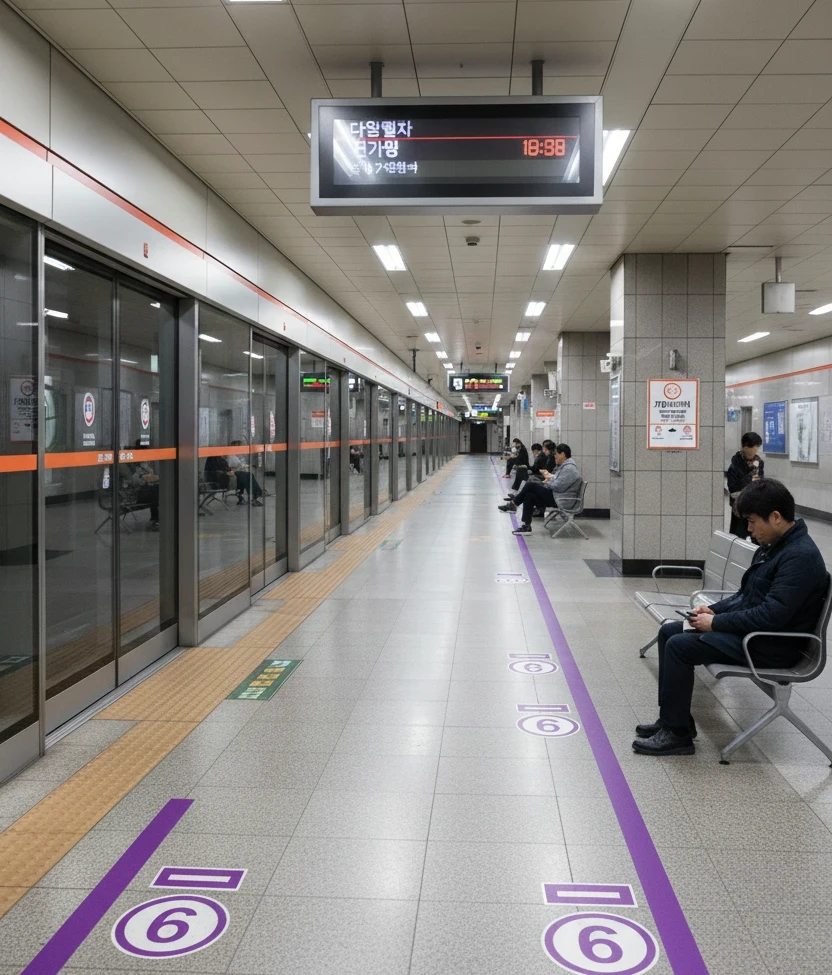
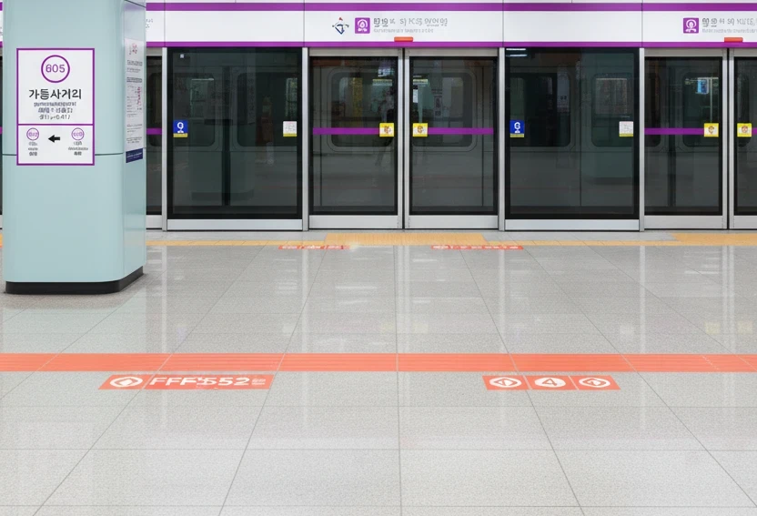

효빈 도시철도 4호선 413번 및 효빈 도시철도 6호선 605번. 효빈광역시 동구 사가당동 37지하 소재이다.
효빈광역시 동구 사가당동에 위치한 4호선과 6호선의 환승역이다. 역 이름은 역이 위치한 교차로인 '가동사거리'에서 유래했다.
4호선(2003년 개통)과 6호선(2016년 개통)이 십자 형태로 교차하는 구조로, 동구의 남북축과 동서축이 만나는 교통의 요지이다. 지상에는 교통량이 상당히 많은 가동사거리가 있으며, 출퇴근 시간에는 도로 교통 정체로 인해 지하철을 이용하는 승객이 매우 많다.
|
4
6
가동사거리역 출구 정보
|
||
|---|---|---|
| 번호 | 주요 시설 및 방향 | 비고 |
| 1 | 부선초등학교 | |
| 2 | 덕현9동행정복지센터 | |
| 3 | 덕현고등학교, 덕현초등학교, 덕현5동행정복지센터, 효빈역지하상가 진입 | |
| 4 | 덕현6동행정복지센터, 매남초등학교 | |
| 5 | 덕현11동행정복지센터, 나공중학교 | |
| 가동사거리역 이용객 통계 | ||||
|---|---|---|---|---|
| 연도 | 4호선 | 6호선 | 총합 | 비고 |
| 2020년 | 12,850명 | 10,605명 | 23,455명 | |
| 2021년 | 12,993명 | 10,723명 | 23,716명 | |
| 2022년 | 15,109명 | 12,469명 | 27,578명 | |
| 2023년 | 15,375명 | 12,688명 | 28,063명 | |
| 2024년 | 15,645명 | 12,911명 | 28,556명 | |

| 신 덕 ↑ | |||
| 하 | ㅣ | ㅣ | 상 |
| ↓ 사가당 | |||
| 상 | 4 효빈 도시철도 4호선 | 해운산업지구 방면 |
| 하 | 4 효빈 도시철도 4호선 | 천가 방면 |

| 사 노 ↑ | |||
| 하 | ㅣ | ㅣ | 상 |
| ↓ 덕 현 | |||
| 상 | 6 효빈 도시철도 6호선 | 마잡 방면 |
| 하 | 6 효빈 도시철도 6호선 | 고송나루 방면 |
효빈광역시 시내버스 노선들이 주로 정차한다.
| 구분 | 정류소명 | 노선 번호 |
|---|---|---|
| 순방향 | 가동사거리역 | 6, 26, 151, 193, 371 |
| 역방향 | 가동사거리역(건너편) | 06-1, 62, 511, 913, 731 |